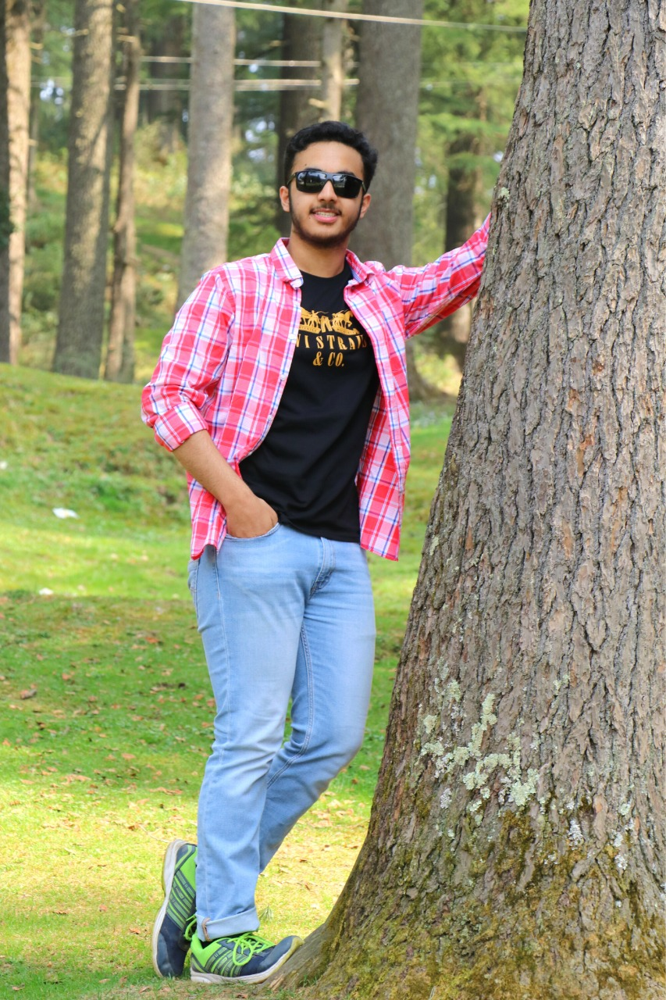

Arjun Panwar
Innovator by Brain Generous at Heart
Passionate Student | Co-Founder | Hackathons Aficionado | Passionate about Coding |Learning new technologies everyday
I am an aspiring senior year student at Bharat Mata Saraswati Bal Mandir, Narela, New Delhi (India) . I am thrilled at the prospects of delving deep into the connected areas of the Pure Science, Mathematics and Computer Science for use by individuals, groups and organizations, and social implications of these systems in the modern World. Endowed with a pleasing personality I have endeavored to ever be on the move to set my eyes fixated on the personal, academic and professional goals that I make in life. In the coming years I see myself completing a Bachelor’s Degree Program in Computer Science in one of the prestigious Universities in United States of America. I am fully aware of the arduous task that I am undertaking but I am aware nothing great was ever accomplished without being a ‘dreamer, believer and achiever’. I aspire to invariable give back to the community as much as I gain from it.
created with
Website Builder Software .